How RFPIS works
Read this first. It explains where opportunities come from and what you do with them.
RFPIS finds funding opportunities (RFPs, RFIs, EOIs, calls for proposals and grand challenges) on donor websites and the open web. It checks each one against your organisation's eligibility rules, and helps the team decide to Proceed, Park or Decline.
Where opportunities come from
Collecting opportunities and screening them are two separate steps.
The weekly rhythm
Roles: what you can and can't do
Your role shows at the bottom of the left sidebar, under "Signed in as".
Every account has one role. Most team members are Contributors or Reviewers. Throughout this manual, steps that need more than a Contributor role are marked ADMIN ONLY or REVIEWER+. Steps for the platform owner are marked SUPER USER.
| What you want to do | Contributor | Reviewer | Admin | Super User |
|---|---|---|---|---|
| Run the Eligibility Scan, read the pipeline, search | ✓ | ✓ | ✓ | ✓ |
| Submit an RFP, update a decision, edit an RFP | ✓ | ✓ | ✓ | ✓ |
| Log engagements, resolve pending actions, edit the schedule | ✓ | ✓ | ✓ | ✓ |
| Generate and download reports | ✓ | ✓ | ✓ | ✓ |
| Add meeting notes and mark them resolved | — | ✓ | ✓ | ✓ |
| Delete an RFP | — | — | ✓ | ✓ |
| Edit the organisation (Tenant) profile | — | — | ✓ | ✓ |
| Open Settings: users, scan preferences, records, manual scans | — | — | ✓ | ✓ |
| Run the full Extraction, manage organisations, view as another organisation | — | — | — | ✓ |
Signing in for the first time
Pages: /activate-account · /login · /password-reset
Nobody can sign themselves up. Your administrator creates your account, and RFPIS then emails you an invitation.
A. Activate your account
- Open the email titled "Activate your RFPIS APP account". It is sent to the address your admin entered, for example user@example.com.
- Click Activate my account. The link works for 7 days. The email also shows an activation code you can paste in instead.
- On the 🔑 Activate your account screen, check that the email is yours, then click Activate account.
- Type a new password twice and click Save password.
- When you see "Account activated", click Go to sign in.
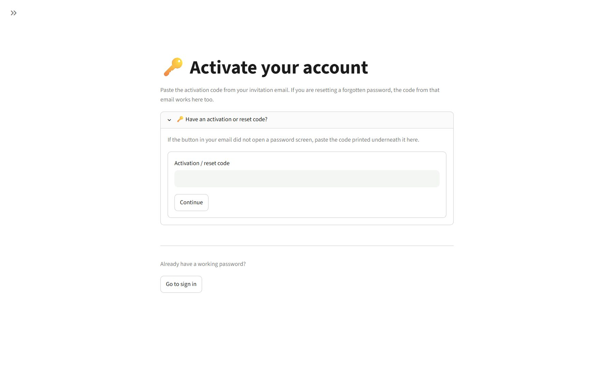
B. Sign in
- Go to your RFPIS web address. If you aren't signed in, you land on the sign-in screen.
- In Username, type your email address.
- Type your Password and click Login.
- You arrive on Home. You stay signed in for about 8 hours.
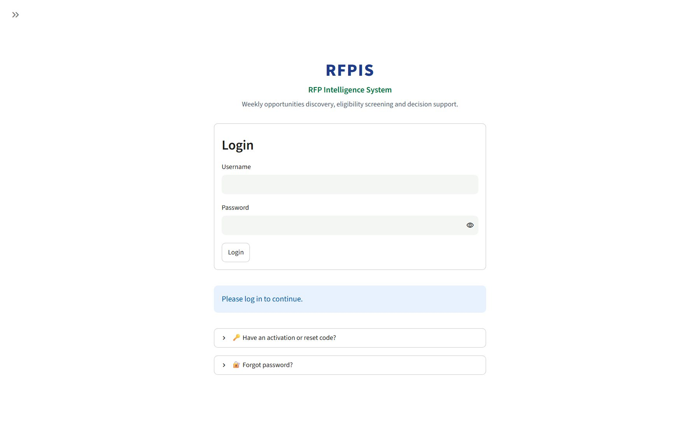
C. Forgot your password?
- On the sign-in screen, open 🔐 Forgot password?.
- Type your email and click 📨 Request password reset.
- An administrator approves the request. You then get an email titled "Change your RFPIS APP password". Your old password keeps working until you use the new link.
- Click Set a new password in the email. Or paste its code into 🔑 Have an activation or reset code?. The code expires in 2 hours.
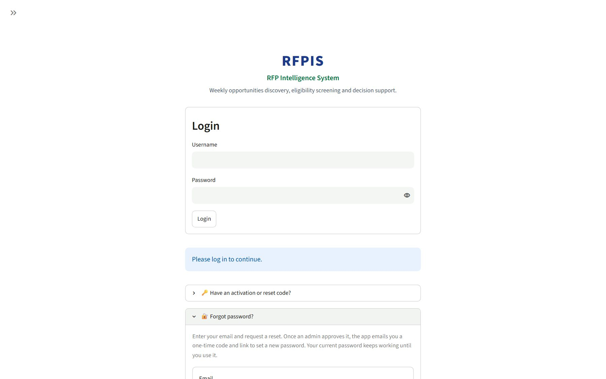
Finding your way around
Every page has the same two navigation areas: the left sidebar and the top bar.
Left sidebar: your work pages
🏠 Home · 📚 Pipelines · 💼 Grants · 🗒️ Actions · 📊 Report · 🗺️ Donors · 🏢 Tenant · 📝 Submit. Admins also see ⚙️ Settings. The bottom of the sidebar shows who you're signed in as and your Role.
Top bar: tools
🔍 Search the app and the web · 🔔 Notifications (scan alerts and new opportunities) · 👤 Person menu (Help, Tenant, Profile, Sign Out).
The 🔔 Notifications bell: how you're alerted
- A red number on the bell means there are new items since you last looked.
- Click the bell. At the top, you'll see ⏰ Next auto-scan (Friday 06:00 UTC) and 📅 Next call with this week's note-taker, presenter and chair.
- When "Scan completed" or "Auto-scan completed" appears, new raw records are ready. Go to Pipelines → Screen and run the Eligibility Scan.
- "📥 New opportunity" means a teammate submitted an RFP. Click it to open the opportunity.
- Click Mark all as read to clear the count.
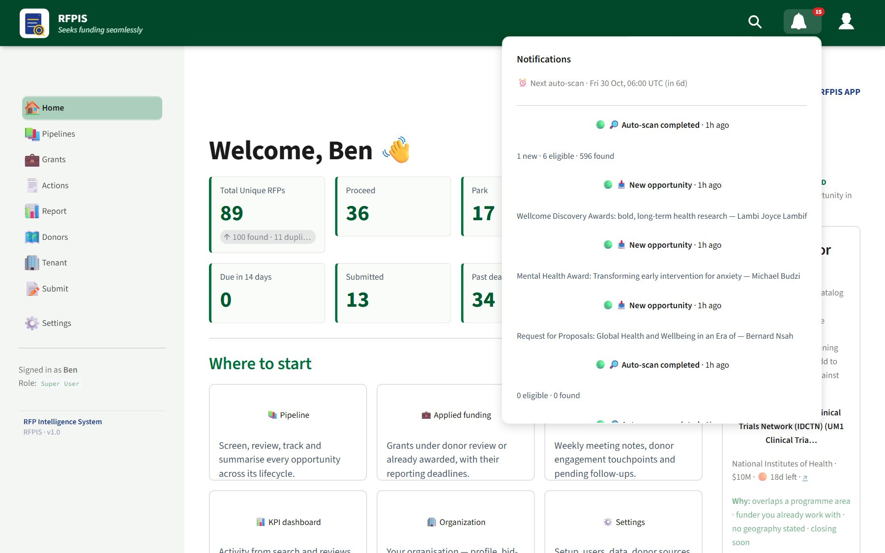
The 👤 person menu
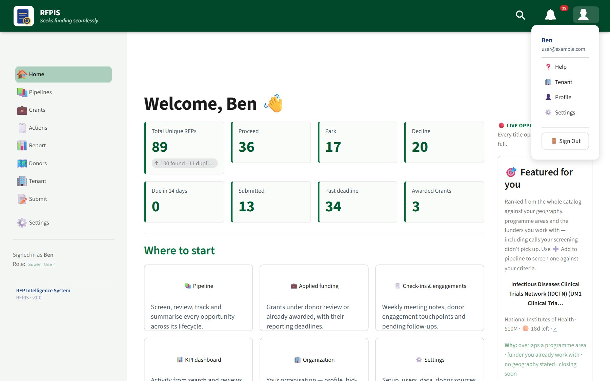
The Home page
Sidebar → 🏠 Home. This is where you land after signing in.
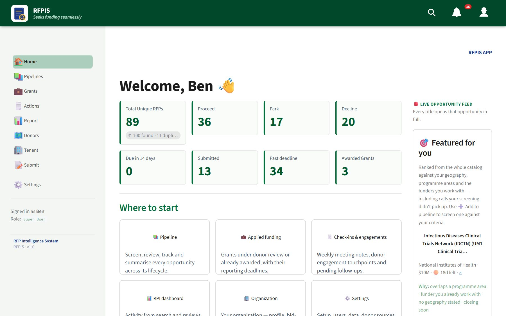
- Read the numbers. The top row shows Total Unique RFPs, Proceed, Park and Decline. The second row shows Due in 14 days, Submitted, Past deadline and Awarded Grants.
- Jump in. Under Where to start, click a card headline, for example 📚 Pipeline, to open that page.
- Check the 🔴 Live Opportunity Feed on the right. It has four lists: 🎯 Featured for you, ✅ Top Matches, 💰 Top Funding and ✨ Also Interesting. Click any title to open it in full.
- On a Featured for you card, click ➕ Add to pipeline to screen that call into your pipeline straight away.
- Below Where to start, the 📘 New to RFPIS? box has this manual and the training slides to download.
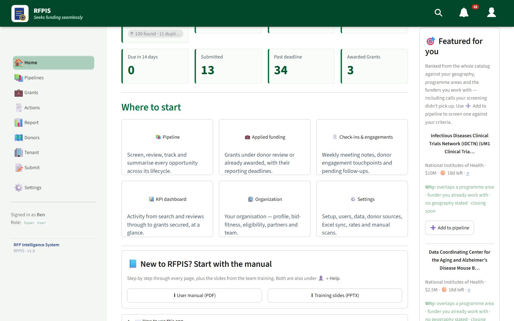
Run the Eligibility Scan
Sidebar → 📚 Pipelines → Screen tab. Every team member can do this.
The Eligibility Scan reads the shared store of raw records against your organisation's eligibility rules. It adds the calls that fit to your pipeline. It doesn't crawl the web, so it takes seconds.
- When the 🔔 bell shows "Scan completed", or your administrator tells you new records are ready, open 📚 Pipelines.
- Stay on the Screen tab. At the top right, beside 📝 Submit New Funding, click 🎯 Eligibility Scan.
- Wait while the button shows ⏳ Scanning…. Don't refresh the page.
- Read the green banner at the top. For example: "Screened 120 curated solicitations → 8 eligible for your org (5 newly added, 3 already in your pipeline) · 112 not a fit."
- Scroll down the Screen tab to see the new opportunities for this review week.
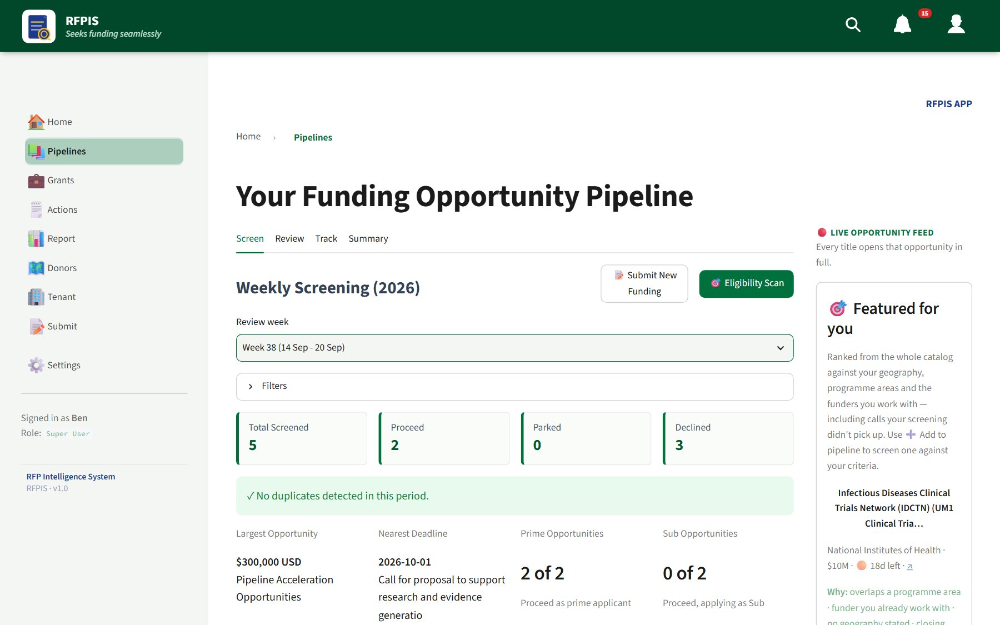
Read the Screen tab
Sidebar → 📚 Pipelines → Screen. This is the week's list, which the team walks through on the Monday call.
- Pick the Review week at the top. It defaults to the current week.
- Optional: open Filters to narrow by Decision, Feasibility, Geographic scope or Program area.
- Read the counters: Total Screened, Proceed, Parked and Declined. Under them you'll see the Largest Opportunity, the Nearest Deadline, and the Prime and Sub opportunities.
- Scroll to Proceed & Parked RFPs — Rationale & Risks. Each row shows the score, the system's suggestion (Auto-rec), the team's Decision, key risks and confidence.
- To discuss one opportunity in depth, go to the Review tab.
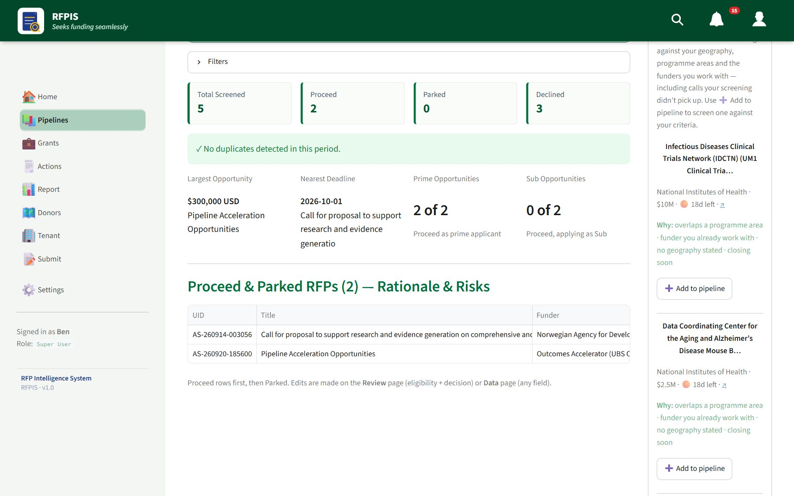
Review an opportunity and update the decision
Sidebar → 📚 Pipelines → Review tab. Every team member can update a decision.
How the score works
Every opportunity is scored against nine criteria. The five MUSTs make up 65% of the score: legal status, strategic fit, implementation capacity, geographic fit, and co-financing & compliance. The four PREFERs make up 35%: funding quality, donor relationship, competitiveness and bid effort.
Review an opportunity
- Open the Review tab. Choose the Review week, then pick the RFP from the RFPs in <week> list.
- Read the cards across the top: Key details, Value, Focus Areas, Geographic Scope and Brief description.
- Look at the Bid Strength gauge, the System suggestion and the Confidence.
- Open any criterion in the Eligibility criteria grid, for example "MUST 4 · Geographic fit", to see why it was met or not met.
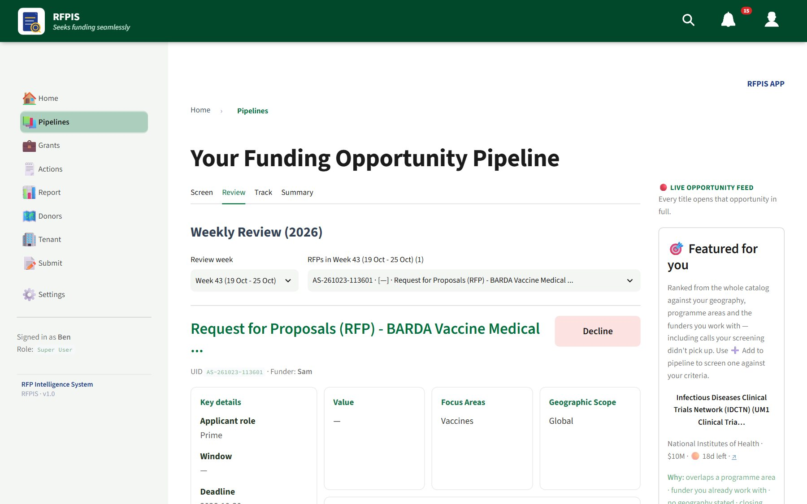
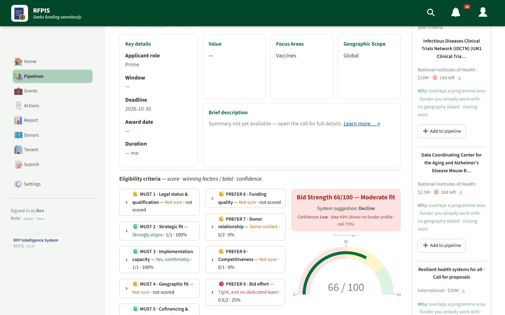
Update the decision
- Scroll to Team decision and click ✏ Update Decision.
- Optional: correct any criterion component the system got wrong. The score and suggestion follow your changes. A person who has read the call outranks the system.
- Set Decline flags? (No / Yes) and write the Key risks in one line.
- Choose the Decision: Proceed, Park or Decline.
- Write the Decision rationale in two or three lines.
- Answer Donor already engaged on this opportunity? with Yes, Partial or No.
- Click 💾 Save changes. A confirmation shows the new score, suggestion and decision.
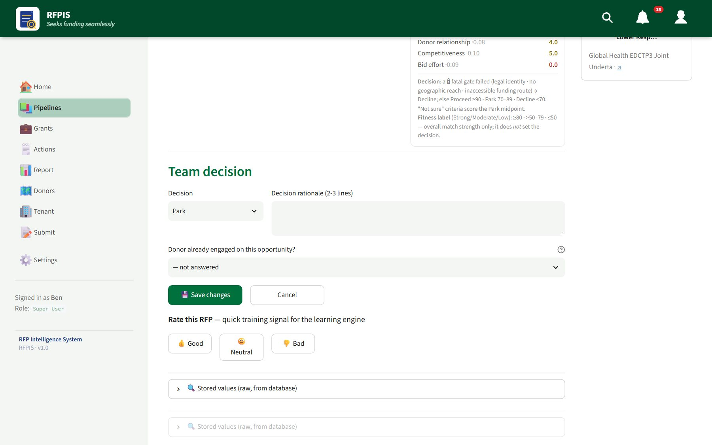
At the bottom of the Review tab, rate the RFP with 👍 Good, 😐 Neutral or 👎 Bad. Your ratings teach the scoring model what your team values.
Track and Summary
Sidebar → 📚 Pipelines → Track and Summary tabs.
Track: opportunities you're pursuing
- Open the Track tab. It lists every active Proceed RFP for the year.
- Pick one in Select RFP to review, or click its row in the table.
- Check Days to deadline, Stage, Progress status and Proposal lead(s). The Next action comes from the meeting notes.
- Use 🚀 Apply on the funder's portal ↗ to go to the funder's application site.
- Click ✏️ Edit to update the stage, progress or next action.
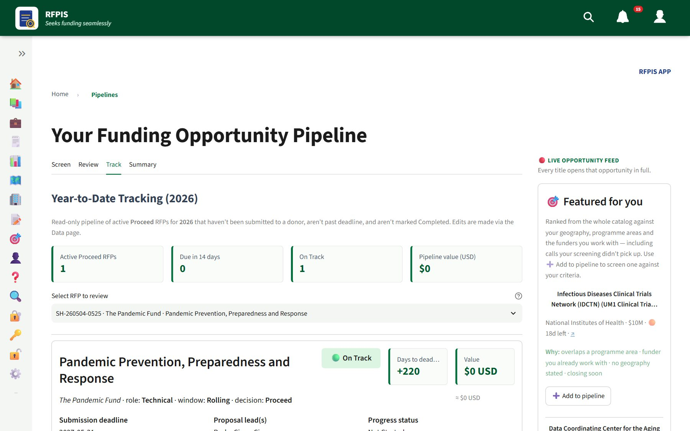
Summary: the year at a glance
The Summary tab has five sections. A is the Funding Calls Snapshot, B is Pipeline health and C is Proposal development status. D is the Periodic Reflection (pick a week, month or quarter) and E is Partner engagement KRs. It's read-only and good for quarterly check-ins.
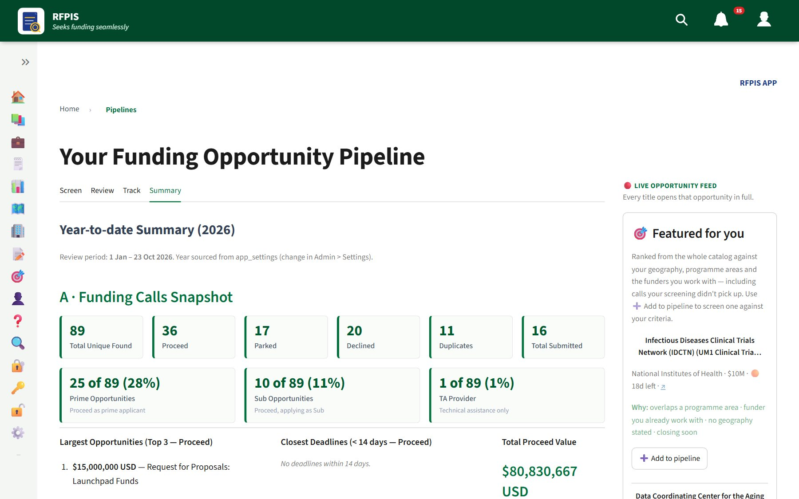
The Opportunity page
Click any opportunity title: in the Live Opportunity Feed, a bell item, search results, or 🔍 View opportunity on Review.
- Read the chips under the title. They show the deadline status, the type of call, and whether it's In your pipeline, Screened — not in a pipeline yet, or Shared catalogue — not screened for you.
- Use Open the call ↗ and Apply ↗ to go to the funder's own pages.
- Read 1 · The opportunity: award value, deadline, duration, overview and documents.
- Read 2 · Decision aid: how the call fares against your organisation, its Bid Strength, and What's against it.
- At the bottom:
- For an opportunity already in your pipeline, click ✏️ Open in Review.
- For one from the shared catalogue, click ➕ Add to my pipeline, or ✕ Not relevant to dismiss it.
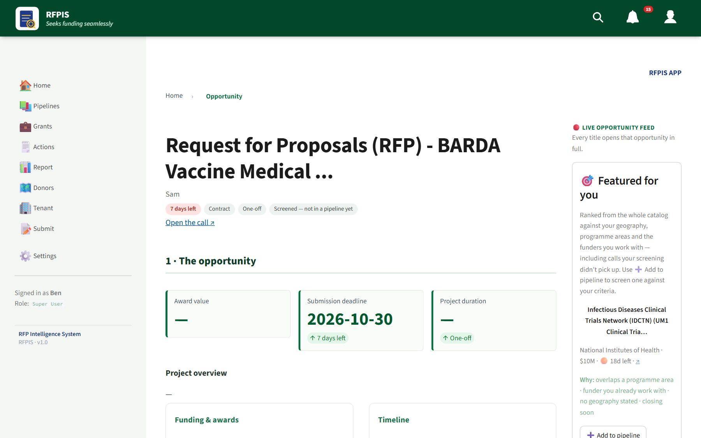
Search for opportunities
Top bar → 🔍 Search, or the full page at /search.
One search box looks in two places. First it searches inside RFPIS: pages, tabs, opportunities and donors. Then, if you ask it to, it searches the web for live, recent funding calls.
A. Search inside RFPIS
- Click 🔍 in the top bar.
- Type at least two characters, for example malaria or a donor's name, and click Search. For more room, click Open full search page.
- Results are grouped under 📑 Pages & tabs, 📄 Opportunities and 🗺️ Donors. Open a group and click a result to go to it.
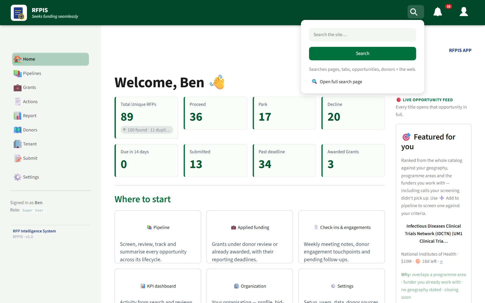
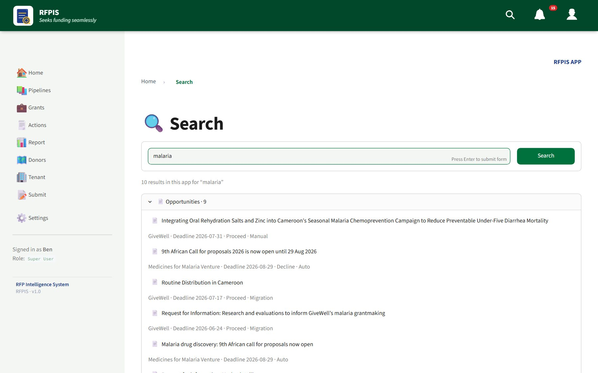
B. Search the web for new calls
- On the search page, scroll to 🌐 Opportunities on the web.
- Click 🌐 Search the web for "…".
- Browse the results, 15 per page, with ‹ Prev and Next ›. Rate them with 👍 😐 👎 to improve future results.
- Found a real opportunity? Click ➕ Track. RFPIS scores it and adds it to your pipeline. It tells you if the call is already tracked.
Submit an RFP you found elsewhere
Pipelines → Screen → 📝 Submit New Funding, or go to /submit-new-rfp. Every team member can do this.
The scans don't catch everything. A colleague might forward a call, or a donor might publish it on a partner's website. When you find an RFP that isn't in RFPIS yet, submit it here. It goes straight into your pipeline and joins the shared pool for everyone else.
- Go to 📚 Pipelines → Screen and click 📝 Submit New Funding.
- Section 1 · Opportunity description. Fill in the Opportunity title * and the Donor *. If the donor isn't listed, choose Other and type its name. Add the deadline, the Opportunity link (URL), the estimated value and currency, and the Lead applicant *.
- Section 2 · Eligibility. For each of the nine MUST / PREFER questions, pick your best answer. Leave it as Not sure if you don't know.
- Section 3 · Decline flags & risks. Answer Decline flags present? * and write the key risks in one line.
- Section 4 · Initial decision. Choose your Bid decision * and add a short rationale.
- Section 5 · Team. This appears for Proceed or Park only. Pick the Proposal lead *, and optionally contributors and reviewers.
- Click Submit RFP. You'll see "✅ Submitted as UID — alignment score X/100". The RFP is tagged to this review week, ready for the team call.
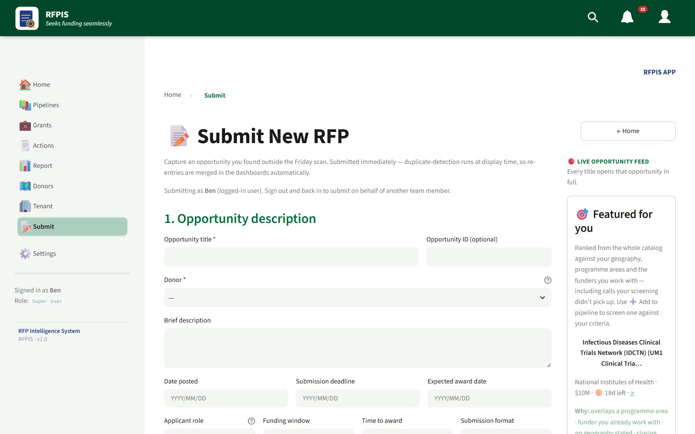
Actions: meetings, notes and follow-ups
Sidebar → 🗒️ Actions. You'll use this page most during team meetings.
The Actions page has four tabs. Meetings holds the notes from each team call. Engagements logs contact with donors. Pending gathers every open follow-up. Schedule sets who runs each call.
A. Meetings: capture notes during the call
REVIEWER+ Adding notes and changing their status needs the Reviewer role or above. Contributors can read the notes and download them.
- Open 🗒️ Actions → Meetings. Check the Review week. The tiles show the Meeting date, Note-taker, RFP presenter and Chair.
- Click ➕ Add a note at the top right.
- In Linked RFP (Proceed) *, choose the opportunity being discussed. Only RFPs the team has agreed to pursue are listed.
- Write the Issues * raised, then the Actions / recommendations * agreed.
- Pick the Owner * and a Due Date *. The due date defaults to the next Monday.
- Click 💾 Save note. The note appears in Notes for <week>.
- When the action is done, click its red Not Resolved button. It turns green: ✓ Resolved.
- Need a copy for the minutes? Click ⬇ Download <week> notes as CSV.
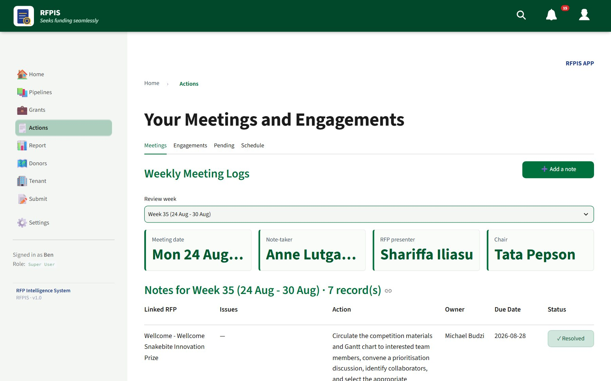
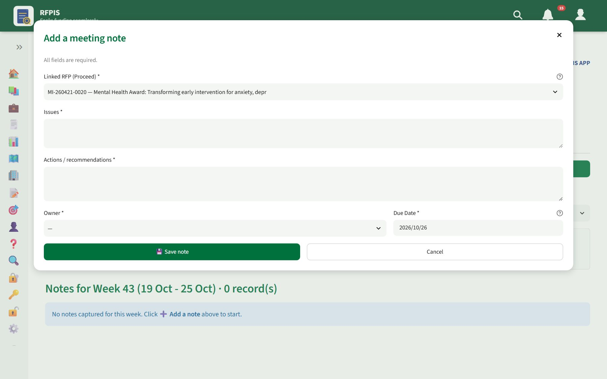
B. Engagements: log a donor touchpoint
- Open Actions → Engagements. The top shows how many engagements you've logged this quarter against the 2–4 target.
- In Log an engagement, set the Engagement date *, Type * and Format.
- Choose the Donor * and the Internal lead *. Pick Other to type a name that isn't listed.
- Add the donor contacts, the Purpose and the Outcome / follow-up. Link it to an RFP if there is one.
- Click 💾 Save engagement.
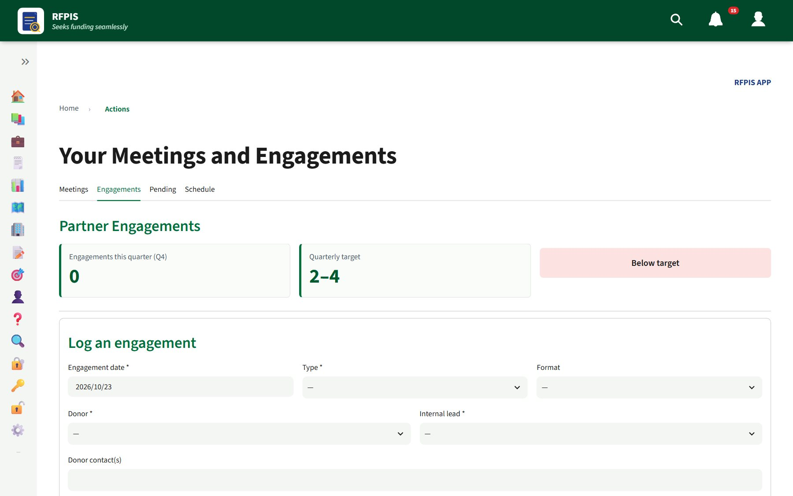
C. Pending: close your open actions
- Open Actions → Pending. It shows every unresolved meeting action and donor follow-up, with a count by owner.
- Open Filters and choose your name under Owner to see only your items.
- When an item is done, click Not Resolved. It's marked resolved and drops off the list.
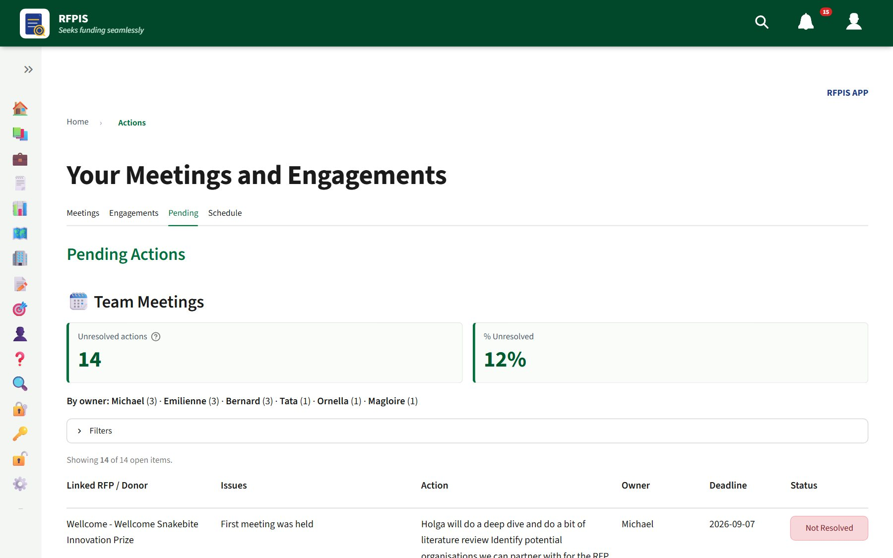
D. Schedule: who runs each call
- Open Actions → Schedule. Switch the View between Week, Month, Year and Day. Browse with ◀ Prev, ● Today and Next ▶.
- To set up a call, open ➕ Add or update a call. Pick the Call date, Note-taker, RFP presenter and Meeting chair, then click 💾 Save call.
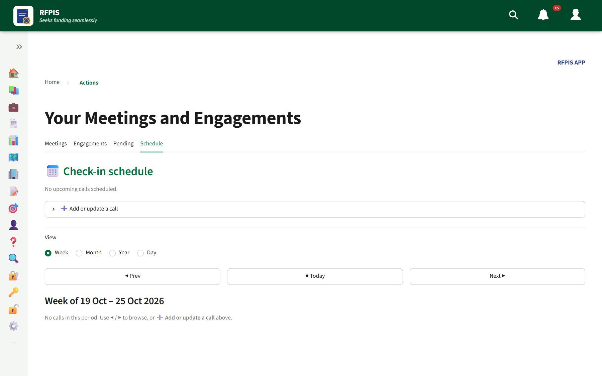
Generate a report
Sidebar → 📊 Report.
- Choose the Period: This year, Year to date, a Specific month, Last 90 days, Last 12 months or All time. Pick the Year, and the Month if you chose a specific month.
- Choose View by: Weekly, Monthly, Quarterly, Semestrial or Annually.
- Optional: open ⚙️ Advanced filter to choose which sections and metrics to include. There are five sections: Scan activity, Team & partners, Insights, Reviews & decisions, and Our results.
- Click ▶ Generate report. Nothing loads until you do. The address bar then holds a link you can share with teammates.
- To download it, click 📄 Export Report, then ⬇ Download PDF. For the numbers in Excel, click 📥 Export Data.
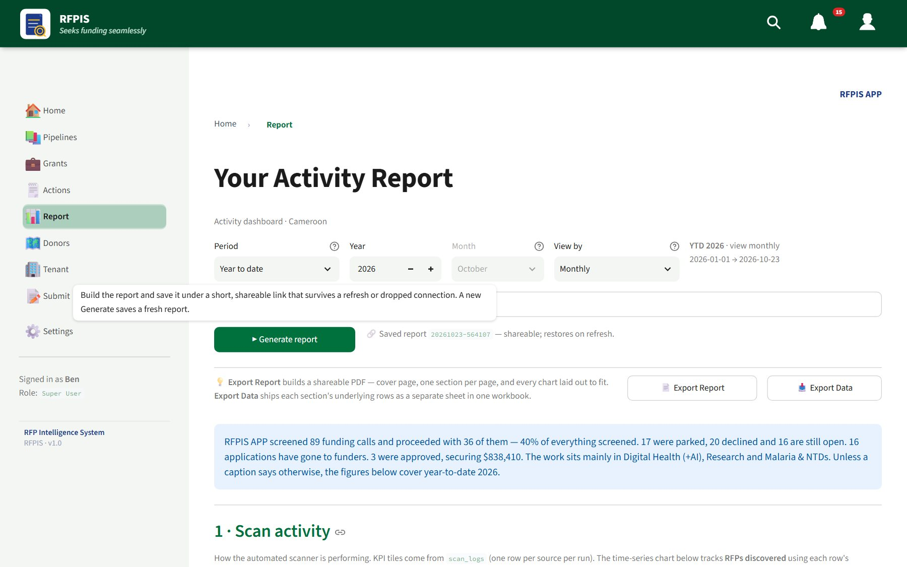
Grants
Sidebar → 💼 Grants. Applications you've submitted, and grants you've won.
- Read the totals: Total Submitted, Approved, Under Review and Not Approved. Below them are the amounts requested and secured, in USD, and your win rate.
- Under Per-grant detail, choose one in Pick an applied grant. You'll see its dates, amounts, reporting deadlines and recent meeting notes.
- Click ✏️ Edit grant details to record the donor's decision or the reporting dates.
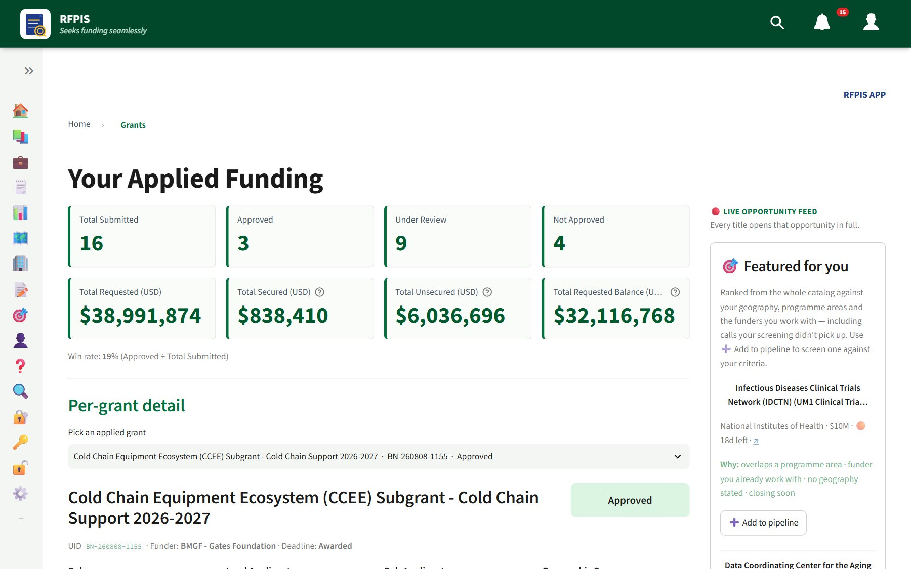
An RFP appears here once its donor decision is set (Approved, Under Review or Not Approved), or once its progress is marked Completed.
Donors
Sidebar → 🗺️ Donors. The donor catalogue: focus areas, award ranges and contacts.
- Open 🔎 Filter & search to find a donor by name, focus area or geography.
- Tick a donor's row, then click 👁 View to read its profile.
- Click ⬇ Download / print (PDF) in the profile for a donor brief.
- Spotted something wrong or missing? Tick the row and click 💡 Suggest, or use 💡 Suggest donor to propose a new one.
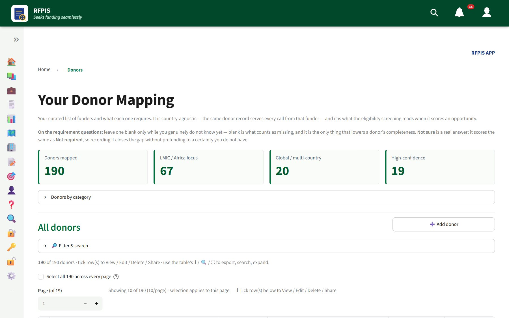
Your organisation (Tenant)
👤 Person menu → Tenant. In this manual, the example organisation is called "RFPIS APP".
This page is your organisation's profile. RFPIS uses it to decide which calls fit you: the countries you work in, your program areas, funders and team.
- Check the profile completeness bar. A fuller profile gives better matches.
- Read the cards: 🏷 Identity & eligibility, 💰 Capacity & funding targets, 🎯 Program areas (graded 0–5), 🌍 Geography & partners, 🤝 Funders & languages and 👥 Team members.
- If something is wrong or out of date, tell your administrator.
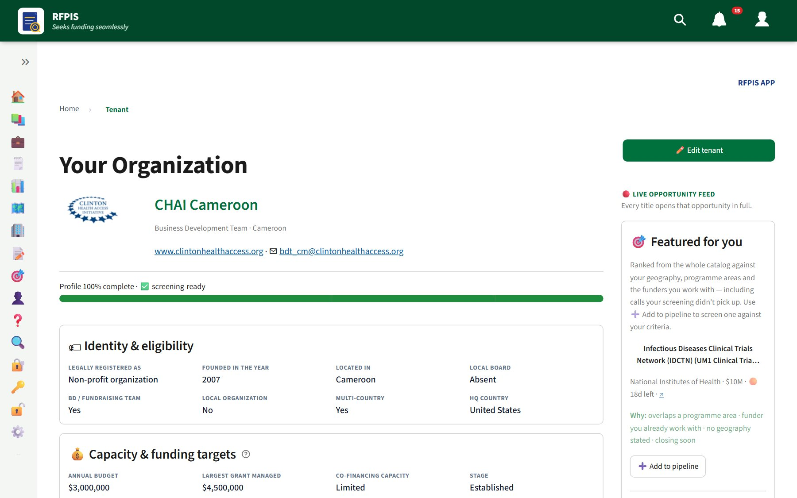
Your profile and password
👤 Person menu → Profile.
- On the Profile tab, update your name, phone, job title, department and location. Choose your Program areas too. Click 💾 Save profile.
- To change your password, open the Change Password tab. Enter the current password, then the new one twice, and click 🔐 Change password.
- Check 🔐 Recent sign-ins on the right. If you don't recognise a sign-in, change your password and tell your administrator.
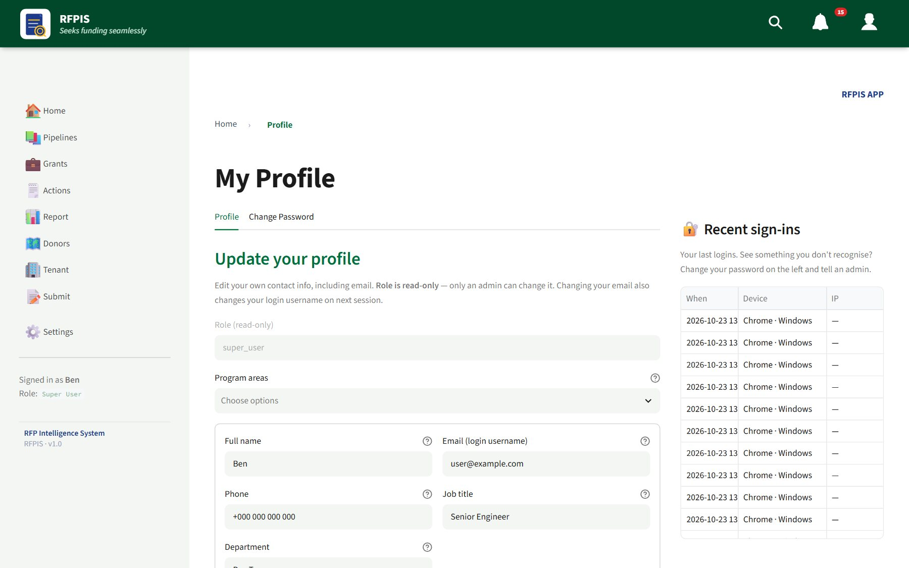
The Help page and getting help
👤 Person menu → Help.
- Click 👤 at the top right, then Help.
- At the top, download this User Manual (PDF) or the Training slides (PPTX).
- Read Getting around, How an opportunity flows and How an opportunity is scored for a quick refresher.
- Still stuck? Contact your administrator. The Help page shows the address to use.
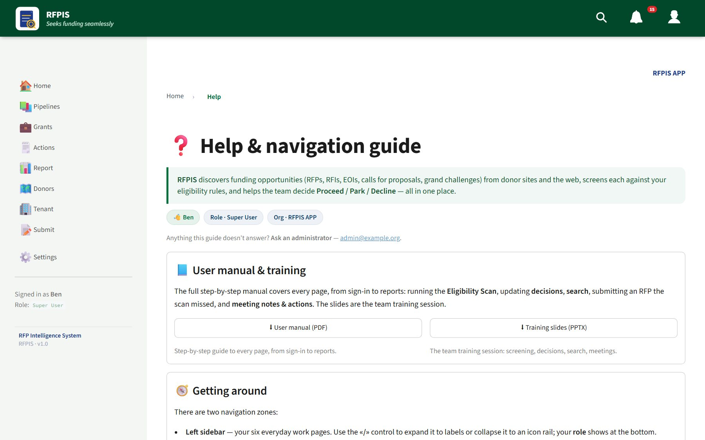
Settings ADMIN ONLY
👤 Person menu → Settings, or the ⚙️ sidebar link. If you're not an administrator, you can skip this chapter. You won't see these options.
Setup
Organisation profile, bid fitness, team members, and Scan Preferences (countries, themes, criteria, search terms, currency). These rules drive the Eligibility Scan.
Accounts → Users
➕ Add User sends the invitation email. Each user has Edit (change role), Reset password, Delete and Blacklist.
Records
The full data tables: Screened and Extracted Solicitations, Meeting Logs, Engagement Logs, Applied Funding. You can view, edit, export and share them.
Manual Scan
Eligibility Scan (the same as on Screen), with its history; Search; and Excel Sync. ⛏ Extraction is for the Super User only.
Add a teammate ADMIN ONLY
- Go to Settings → Accounts → Users and click ➕ Add User.
- Enter their name and email (for example user@example.com) and choose a role. Reviewer lets them take meeting notes. Contributor is read-and-submit.
- Click ➕ Create user. RFPIS emails them an activation link that works for 7 days.
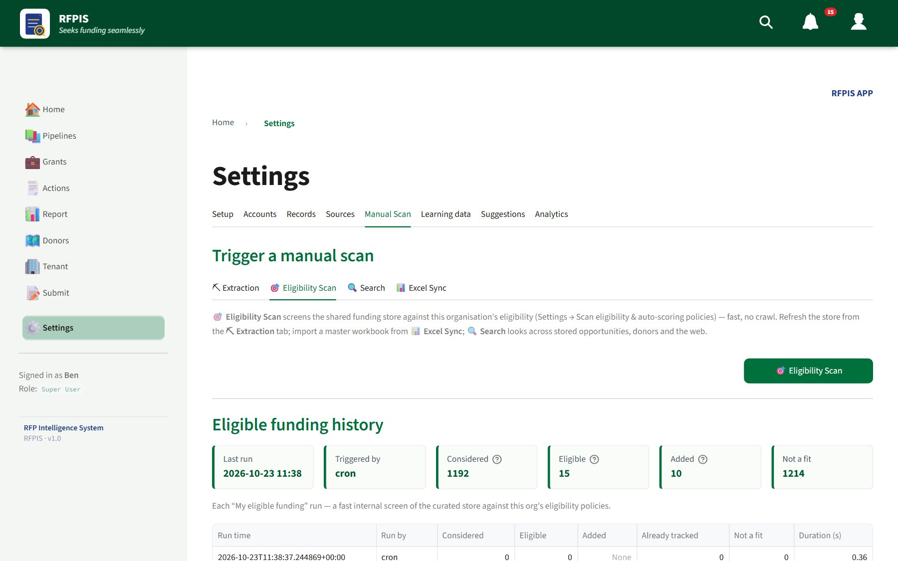
Quick reference
Print this page and keep it by your desk.
| I want to… | Go to | Click |
|---|---|---|
| See if new records are ready | Top bar | 🔔 → "Scan completed" |
| Screen new records for my organisation | Pipelines → Screen | 🎯 Eligibility Scan |
| See this week's opportunities | Pipelines → Screen | Review week |
| Record the team's decision | Pipelines → Review | ✏ Update Decision → 💾 Save changes |
| Set the proposal lead or next action | Pipelines → Review / Track | ✏️ Edit RFP |
| Find an opportunity or donor | Top bar | 🔍 → Search |
| Look for new calls on the web | Search page | 🌐 Search the web → ➕ Track |
| Add an RFP the scan missed | Pipelines → Screen | 📝 Submit New Funding → Submit RFP |
| Take meeting notes REVIEWER+ | Actions → Meetings | ➕ Add a note → 💾 Save note |
| Log a donor call | Actions → Engagements | 💾 Save engagement |
| Close an action I've finished | Actions → Pending | Not Resolved → ✓ |
| Download a report | Report | ▶ Generate report → 📄 Export Report |
| Change my password | 👤 → Profile | Change Password |
| Get this manual again | 👤 → Help, or Home | ⬇ User Manual (PDF) |
Glossary
Raw records
Every call the crawl found, from every country and theme, before screening.
Eligibility Scan
Screens raw records against your rules. Only the calls that fit join your pipeline.
Review week
The Monday-to-Sunday week an RFP is tagged to for the team call.
Proceed / Park / Decline
Pursue it / revisit it later / don't pursue it.
Bid Strength
A score from 0 to 100 across the five MUSTs and four PREFERs.
Tenant
Your organisation's own space in RFPIS, for example "RFPIS APP".